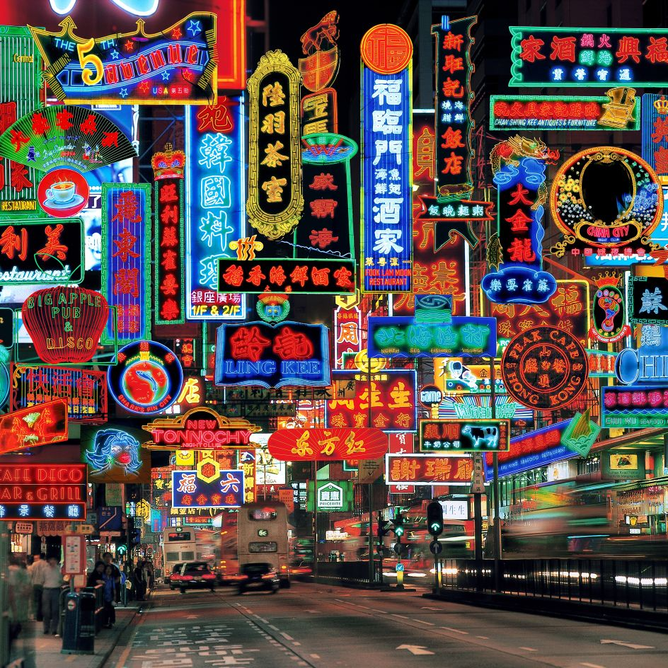

Almost as if it transitioned perfectly into this era (how else would time transition in real life?), Hong Kong action cinema fed itself off of the massive success of the late 70s era kung fu filmography. Hollywood's influences further fed into the stylized filmmaking that came about during this era, as well as some of the most prominent actors and directors of all time setting the precedence of the type of movies that would take hold of this era.
While many names were prominent and significantly important with promoting 80s era Hong Kong action - none are on the same level of notoriety as the legendary Jackie Chan. While some time would pass with Jackie Chan as nothing more than an background character or a Bruce Lee replacement, he would find his footing in the late 70s film 'Snake in Eagle's Shadow'. This is regarded as the first instance of Chan's attempt to mix kung fu action with the slapstick comedy expected from him and his ilk. It was during the 80s that actors such as himself begun to create cinema that prized itself on being slick and spectacular, successfully competing with the era of American blockbusters that debuted in a post-Star Wars world.
Wheels on Meals
The Eight Diagram Pole Fighter
Police Story 1 + 2
My Lucky Stars
Yes, Madam
Shaolin Temple